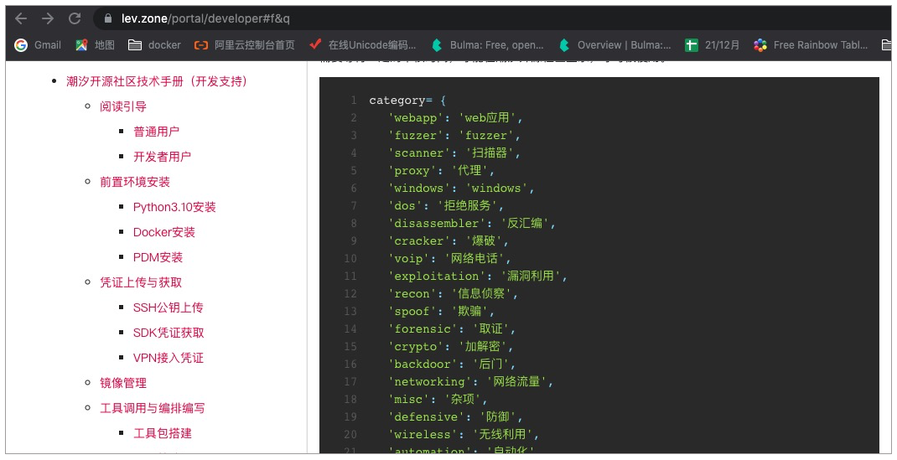

- 00 导读 解读OWASP Top10 2021.md.html
- 00 开篇词 从黑客的视角找漏洞，从安全的角度优雅coding.md.html
- 01 失效的访问控制：攻击者如何获取其他用户信息？.md.html
- 02 路径穿越：你的Web应用系统成了攻击者的资源管理器？.md.html
- 03 敏感数据泄露：攻击者如何获取用户账户？.md.html
- 04 权限不合理：攻击者进来就是root权限？.md.html
- 05 CSRF：为什么用户的操作他自己不承认？.md.html
- 06 加密失败：使用了加密算法也会被破解吗？.md.html
- 07 弱编码：程序之间的沟通语言安全吗？.md.html
- 08 数字证书：攻击者可以伪造证书吗？.md.html
- 09 密码算法问题：数学知识如何提高代码可靠性？.md.html
- 10 弱随机数生成器：攻击者如何预测随机数？.md.html
- 11 忘记加“盐”：加密结果强度不够吗？.md.html
- 12 注入（上）：SQL注入起手式.md.html
- 13 注入（下）：SQL注入技战法及相关安全实践.md.html
- 14 自动化注入神器（一）：sqlmap的设计思路解析.md.html
- 15 自动化注入神器（二）：sqlmap的设计架构解析.md.html
- 16 自动化注入神器（三）：sqlmap的核心实现拆解.md.html
- 17 自动化注入神器（四）：sqlmap的核心功能解析.md.html
- 19 失效的输入检测（上）：攻击者有哪些绕过方案？.md.html
- 20 失效的输入检测（下）：攻击者有哪些绕过方案？.md.html
- 21 XSS（上）：前端攻防的主战场.md.html
- 22 XSS（中）：跨站脚本攻击的危害性.md.html
- 23 XSS（下）：检测与防御方案解析.md.html
- 24 资源注入：攻击方式为什么会升级？.md.html
- 25 业务逻辑漏洞：好的开始是成功的一半.md.html
- 26 包含敏感信息的报错：将安全开发标准应用到项目中.md.html
- 27 用户账户安全：账户安全体系设计方案与实践.md.html
- 28 安全配置错误：安全问题不只是代码安全.md.html
- 29 Session与Cookie：账户体系的安全设计原理.md.html
- 30 HTTP Header安全标志：协议级别的安全支持.md.html
- 31 易受攻击和过时的组件：DevSecOps与依赖项安全检查.md.html
- 32 软件和数据完整性故障：SolarWinds事件的幕后⿊⼿.md.html
- 33 SSRF：穿越边界防护的利刃.md.html
- 34 Crawler VS Fuzzing：DAST与机器学习.md.html
- 35 自动化攻防：低代码驱动的渗透工具积累.md.html
- 36 智能攻防：构建个性化攻防平台.md.html
- 大咖助场 数字证书，困境与未来.md.html
- 春节策划（一） 视频课内容精选：Web渗透测试工具教学.md.html
- 春节策划（三） 一套测试题，看看对课程内容的掌握情况.md.html
- 春节策划（二） 给你推荐4本Web安全图书.md.html
- 结束语 无畏前行.md.html
- 捐赠
36 智能攻防：构建个性化攻防平台
你好，我是王昊天。
在之前的课程中，我们多次用到了潮汐社区版这款Web应用，并且知道了我们不仅可以利用它去运行各种安全工具及编排，还可以自己编写一些编排进行上传供其他用户使用。
这一讲，我们将会一步一步地学习如何使用潮汐社区版，让你充分发挥这款安全Web应用的功能，进行各种智能化的网络攻防行为。
潮汐开源社区版的使用
对于用户而言，我们首先需要注册账号，在注册过程中需要一个邀请码，你使用VefMiMj7N37tHDL7即可（仅支持有限个用户使用），这样我们就能登录成功。潮汐开源社区版lev.zone具有三个功能，即对于工具或编排的使用、添加工具以及添加编排，它们操作的复杂度逐渐在上升，让我们首先来学习对于工具/编排的使用吧。
对于工具/编排的使用
关于工具/编排的使用对应着使用说明文档的内容，你可以先对它进行浏览，这样在学习时会有一个大局观。
事实上，我们可以将准备过程分为三部分，它们分别是前置环境安装、凭证上传与获取以及本地运行。
环境安装
在环境安装部分，我们进入到下方链接，选择适合自己操作系统的Docker进行安装。
https://docs.docker.com/get-docker/
这一步中值得注意的是，我们需要确保安装的Docker Engine版本为20.10.10以上，如果你直接点击页面上的默认安装是没有问题的，但是如果你电脑中原本就有Docker工具，我们可以在命令行输入 docker info 查看它的版本信息，如果低于20.10.10版本，那么就需要重新下载了。
完成Docker安装后，我们要确保每次使用潮汐社区版时，Docker都处于启动状态。
接下来，我们就进入到了下一个环节——凭证上传与获取。
凭证上传与获取
每一个使用潮汐开源社区的用户，都需要将自己的设备与潮汐开源社区平台链接，以便工具包能够在本地运行。我们需要登录潮汐开源社区平台，在账户设置—我的设备中，选择添加设备，并生成随机Token，请注意，此Token只会展示一次，所以你最好把它记录在本地。
下面，我们就开始进行本地运行相关配置。
首先是对于SSH的配置，我们需要运用如下命令进入到SSH公钥的文件目录，新建config文件，并写入配置信息。
# 运行的命令
$ cd ~/.ssh
$ vim config
# 配置信息
Host lev
HostName service.lev.zone
Port 2222
User example_name #这里换成您潮汐开源社区的用户名
这样就完成了对于SSH信息的配置。接下来，我们还需要启动docker-compose.yaml的内容。
本地运行
首先，我们在账户设置—我的设备中获取docker-compose.yml文件，然后进入docker-compose.yml所在文件目录，运行如下命令，搭建本地数据库环境、容器调用环境及与潮汐开源社区平台系统的远程链接，其中这里的Token即为凭证获取时记录在本地的内容。
LEV_USER=example_name LEV_TOKEN=“lev-token” docker compose up -d
# 将example_name改为你的用户名，lev-token改为你的token内容。
等待一段时间，使得容器全部启动完毕，恭喜你，到这里你就可以在潮汐开源社区任意使用各种安全工具啦！
添加工具
如果你不仅满足于对现有工具的使用，还希望在Web应用中添加自己喜欢的工具，那我们就需要学习如何添加工具。
注意，添加工具的学习需要你完成了使用工具/编排的相关配置，除此之外，我们还需要进行一些额外的配置。
环境安装
由于编写及上传个人工具与编排到潮汐开源社区的主要语言为Python3.10及以上的版本，所以我们需要安装相应的Python环境。
下载的方式为访问https://www.python.org/downloads/，然后选择符合你电脑操作系统的Python3最新版本即可。
这里我们还需要安装一个Python包管理器——PDM。因为潮汐开源社区会利用PDM进行一些包的管理、工具的可用性测试以及工具的上传。
下载的方式为进入PDM官网https://pdm.fming.dev/，然后点击Installtion选项，可以看到如下的命令行安装方式，我们只需要寻找符合自己电脑操作系统版本的命令进行安装即可。
# Linux/Mac
curl -sSL https://raw.githubusercontent.com/pdm-project/pdm/main/install-pdm.py | python3 -
# Windows
(Invoke-WebRequest -Uri https://raw.githubusercontent.com/pdm-project/pdm/main/install-pdm.py -UseBasicParsing).Content | python -
在安装完成之后，我们还需要运行如下命令，将安装结束后的路径加入到系统路径中。
export PATH=/root/.local/bin:$PATH
完成这一步骤后，我们可以输入 pdm -V 进行检查，如果看到输出的版本信息就代表我们安装成功了。
接下来，我们需要添加pep582环境变量的配置，如下列举了不同情况下的添加方式，你可以据此寻找合适的类别进行添加。
# Bash
pdm --pep582 >> ~/.bash_profile
pdm completion bash > /etc/bash_completion.d/pdm.bash-completion
pdm config feature.install_cache on
# Zsh
pdm --pep582 >> ~/.zprofile
pdm config feature.install_cache on
# Oh-My-Zsh:
pdm --pep582 >> ~/.zprofile
mkdir $ZSH_CUSTOM/plugins/pdm
pdm completion zsh > $ZSH_CUSTOM/plugins/pdm/_pdm
# Then make sure pdm plugin is enabled in ~/.zshrc
pdm config feature.install_cache on
#Fish
pdm --pep582 >> ~/.fprofile
pdm completion fish > ~/.config/fish/completions/pdm.fish
pdm config feature.install_cache on
# Powershell
# Create a directory to store completion scripts
pdm --pep582
mkdir $PROFILE\..\Completions
echo @'
Get-ChildItem "$PROFILE\..\Completions\" | ForEach-Object {
. $_.FullName
}
'@ | Out-File -Append -Encoding utf8 $PROFILE
# Generate script
Set-ExecutionPolicy Unrestricted -Scope CurrentUser
pdm completion powershell | Out-File -Encoding utf8 $PROFILE\..\Completions\pdm_completion.ps1
pdm config feature.install_cache on
最后，我们还需要对编译器进行PDM的设置。
这里我们需要用VSCode编译器，点击左下角的设置按键，然后搜索settings，点击Edit in settings.json将如下命令加入到VSCode的settings.json中。
{
"python.autoComplete.extraPaths": ["__pypackages__/<major.minor>/lib"],
"python.analysis.extraPaths": ["__pypackages__/<major.minor>/lib"]
}
这样VSCode就可以支持PDM的设置方式，接下来，我们进入到凭证上传与获取阶段。
凭证上传与获取
每一个使用潮汐开源社区的开发者用户，都需要完成SSH公钥上传的操作，具体的实现方式如下：
Linux:
cd ~/.ssh
ls -la
# 如果有 .pub 文件存在（如 id_rsa.pub），则不需要再生成 SSH 公钥
cat ~/.ssh/id_rsa.pub
Windows:
cd C:\Users\username\.ssh #username 是当前 Windows 用户名称
dir
# 如果有 .pub 文件存在（如 id_rsa.pub），则不需要再生成 SSH 公钥
type C:\Users\username\.ssh\id_rsa.pub
如果发现没有SSH密钥对，我们需要运行如下命令生成：
Linux:
ssh-keygen -t ecdsa -C "[email protected]"
# 不建议利用 rsa 加密算法生成密钥对，ecdsa 安全性更高
Windows:
安装 git: https://git-scm.com/download/win
进入 git bash
ssh-keygen
# 不建议利用 rsa 加密算法生成密钥对，ecdsa 安全性更高
生成密钥对后，我们在账户设置—公钥管理中，选择上传SSH公钥，然后将上述步骤生成的 .pub 公钥文件内容复制粘贴进行添加即可。
除此之外，我们还需要获取SDK凭证，它会在我们上传工具包时进行运用，我们在账户设置—开发者设置中，选择生成Token，并将它记录在本地。
到这里，我们就完成了凭证的获取。下面，我们学习如何对工具的镜像进行管理。
镜像管理
在学习镜像管理之前，我们先来了解一下镜像的作用是什么？
在我们潮汐社区版中的工具，都是放在镜像中的，然后系统调用上传的py文件，对这个镜像进行执行函数的设置从而运行这个工具。这可能有点复杂，不过不用担心，我们这里仅仅需要学会如何构建镜像以及上传镜像。
在Docker中，我们可以用一个Dockerfile来构建镜像，为了让你更好地理解，下面我们一起看一个示例：
FROM python
RUN pip install requests
RUN pip install bs4
RUN pip install argparse
RUN pip install lxml
COPY dsuc.py .
这就是一个用来构建工具镜像的Dockerfile文件，其中FROM语句是从Dockerhub中引入镜像源Python，在这个镜像源中已经安装好了Python3环境，我们只需在此基础上继续构建，安装一些Python包，并将相同目录下的工具文件dsuc.py拷贝进镜像中就完成了工具的构建。
我们可以使用 docker build . -t lev:latest，将这个Dockerfile构建为镜像。然后我们在镜像内执行这款工具即可。
作为开发者用户，我们首先需要在自己的GitHub账号下创建一个仓库用于构建自己的某个工具。
如上图所示，我们需要将Dockerfile以及依赖的文件dsuc.py一起上传到GitHub上。
然后，我们要在潮汐开源社区平台的账户设置—开发者设置中，选择绑定GitHub账户，并授权潮汐开源社区对我们GitHub仓库的访问。
之后，我们就可以在潮汐开源社区平台的仓库—镜像管理中，选择添加镜像，将名称填写为需要上传或测试的工具名以及适当的描述信息，点击提交，我们会对你提交的镜像进行审核，通过之后，该工具镜像就可供我们使用。
完成镜像的添加后，我们需要对景象的构建规则进行设置。具体的方式为在镜像管理中点击上传的镜像，然后选择构建规则，点击添加规则。
之后根据GitHub中的类型，选择构建类型等信息，然后点击提交，即可完成镜像配置规则的设置。
完成构建规则的设置后，我们就可以点击构建，生成我们的镜像。等待一段时间后，我们可以在构建结果观察到我们的构建信息。
这样我们的工具镜像就可以使用了。下面，我们继续学习工具调用的方式。
添加工具/编排
在进行工具添加时，我们首先需要准备一个工作区目录，下面以 ./lev-hub 为例，这样我们就可以在其中编写代码文件。
之后，我们进入到 ./lev-hub 这个创建的工作区目录下，执行如下命令：
# 添加官方插件 pdm_lev
pdm plugin add pdm_lev
# 配置接入潮汐的 SDK 的凭证 将之前获取的 token 设置为全局变量
export LEVHUB_KEY={SDK token}
# 其中 username 代表你的用户名，tool 代表将要上传的工具名
pdm lev new username.tool
# 在 ./lev-hub/username.tool 目录下安装 levrt 包
cd ./lev-hub/username.tool
pdm config pypi.url https://pypi.tuna.tsinghua.edu.cn/simple
pdm add levrt
假设我的用户名为example，并且我准备上传工具名为test，这样，我们就可以获得到如下目录结构：
example.test
├── lev
│ └── example
│ └── test
│ ├── __init__.py
│ ├── __pycache__
│ │ ├── __init__.cpython-310.pyc
│ │ ├── asset.cpython-310.pyc
│ │ └── tool.cpython-310.pyc
│ ├── asset.py
│ └── tool.py
└── pyproject.toml
这里，我对其中几个比较重要的文件做一下讲解。文件tool.py代表我们调用工具的方式，我们需要将它的名称改为实际的软件名test.py，同时注意将asset.py、test.py以及 _init_.py 中的tool修改为test。
在创建完工具调用后，我们开始编写其中的代码，首先我们需要了解工具分类信息表，它代表不同工具的类型，我们在编写代码时需要用到。

了解完工具分类后，我们就可以写入test.py文件的内容如下，这是一个有模式的工具调用格式。
"""
test工具的描述
# 此处需要空一行
---
name: test # 工具名称
category:
# 工具的分类，根据开发文档最下方的类型进行选择。
- recon
"""
# 工具的模式。
__modes__ = ["fast", "slow"]
# 导入工具依赖包，分别用于启动工具镜像、将结果数据写入数据库和改写 ENTRYPOINT
from levrt import Cr, ctx, remote
# url 是一个需要输入的字符参数。
def fast(url:str) -> Cr:
"""
test fast模式
```
await test.fast(["talentsec.cn"])
```
---
params:
domain:
desc: 进行检测的域名
patterns:
- talentsec.cn
image: .example.test:v1
model: example/test.fast:1.0
"""
@remote
def entry(url):
import subprocess
import json
output = subprocess.check_output(["python3", "/dsuc.py", "-u", url],text=True)
outpuy = output.split("\n")
outpuy.pop()
result = {"result":output}
ctx.update(result)
return Cr(".zerone.test.fast:v1", "zerone/test.fast:1.0", entry=entry(url))
def slow(url:str) -> Cr:
"""
test slow模式
```
await test.slow(["talentsec.cn"])
```
---
params:
domain:
desc: 进行检测的域名
patterns:
- talentsec.cn
image: .example.test:v1
model: example/test.slow:1.0
"""
@remote
def entry(url):
import subprocess
import json
output = subprocess.check_output(["python3", "/dsuc.py", "-u", url, "-s"],text=True)
output = output.split("\n")
output.pop()
result = {"result":output}
ctx.update(result)
return Cr(".example.test.slow:v1", "zerone/test.slow:1.0", entry=entry(url))
当我们的工具比较简单，仅仅有一个模式时，我们可以将它写为如下格式：
from levrt import Cr, ctx, remote
def test(url:str) -> Cr:
"""
test工具的描述
```
await test("talentsec.cn")
```
---
name: test url查询工具
params:
domain:
desc: 进行检测的域名
patterns:
- talentsec.cn
category:
- misc
image: .example.test:v1
model: example/test:1.0
"""
@remote
def entry(url):
import subprocess
output = subprocess.check_output(
["python3", "/dsuc.py", "-u", url], text=True)
output = output.split("\n")
output.pop()
result = {"result":output}
ctx.update(result)
return Cr(".example.test:v1", "example/test:1.0", entry=entry(url))
到这里，我们已经知道了工具的调用方式，想要去执行这些工具还需要写好编排。以多模式test工具为例，它有两种模式fast以及slow。
我们在 ./lev-hub/username.tool/lev/username/tool/asset.py，对应到此处为 ./lev-hub/example.test/lev/example/test/asset.py中进行编写。
# test（多模式工具简单调用）
import asyncio as aio
from levrt import ctx
from . import test
async def slow_test(domain:str):
“””
编排描述。
```
await slow_test(“talentsec.cn”)
```
—
name: slow test 检测
params:
domain:
desc: 进行检测的域名
patterns:
- talentsec.cn
model: example/test.slow:1.0
“””
result = await test.slow(domain)
data = await result.get()
print(data)
async def fast_test(domain:str):
“””
编排描述
```
await fast_test(“talentsec.cn”)
```
—
name: fast test 检测
params:
domain:
desc: 进行检测的域名
patterns:
- talentsec.cn
model: example/test.fast:1.0
“””
result = await test.fast(domain)
data = await result.get()
print(data)
# test（无模式工具简单调用）
import asyncio as aio
from levrt import ctx
from .test import test
async def simple_test(domain:str):
“””
攻击者利用一个泛用于Unix系统中的二进制文件，使他们能够提升他们的权限并执行他们不应该被授权执行的操作。
在此攻击模式下，gtfobins工具将利用输入的Unix二进制文件名，搜寻它可能存在的权限提升命令。
```
await simple_test(“talentsec.cn”)
```
—
name: simple test 检测
params:
domain:
desc: 进行检测的域名
patterns:
- talentsec.cn
model: example/test:1.0
“””
result = await test(domain)
data = await result.get()
print(data)
写完编排内容后，我们还需要进行模块的导入操作，这样我们的工具才能被运行。
具体的方法为，在 ./lev-hub/example.test/lev/example/test/_init_.py 中，将我们写好的编排及工具进行导入。
# test 多模式工具
__all__ = [“test”, "slow_test", "fast_test"]
# 设定上传到潮汐社区的导出数组
from . import test # 工具定义的所有模式导入
from .asset import slow_test, fast_test # 导入编排
# gtfobins（无模式工具模块导出）
__all__ = ["test", "simple_test"]
from .test import test
from .asset import simple_test
现在，我们已经完成了工具内容相关的编写，如果你想要本地测试它的功能，我们需要在 ./lev-hub/username.tool 目录下，添加执行文件main.py。
# 以多模式 test 工具为例
from lev.example.test import fast_test
if __name__ == "__main__":
import levrt
# import logging
# logger = logging.getLogger("lev")
# logger.setLevel(logging.DEBUG)
# logger 相关的命令可以使工具在执行时，编译器命令行输出调试数据
levrt.run(fast_test("talentsec.cn"))
#注意，为了 subprocess 正确的执行命令，传入编排的参数值都要符合参数定义的类型
然后运行下列命令以启动talentsec/lev：
docker run -v /var/run/docker.sock:/var/run/docker.sock --rm -it talentsec/lev
# 或者可以使用如下环境变量传入 LEV_USER 及 LEV_AGENT_KEY 的方式
docker run -e LEV_USER=<your username> -e LEV_AGENT_KEY=<agent key> -v /var/run/docker.sock:/var/run/docker.sock --rm -it talentsec/lev
# 配置关联潮汐系统的终端 VPN 实例凭证 lev-agent-key
等待容器启动完成后，我们就可以在目录 ./lev-hub/username.tool 下用pdm run python main.py进行工具/编排的测试，如果有问题，我们可以及时对它进行修改。
当我们修改好后，并且检测完没有问题发生，我们就可以在 ./lev-hub/username.tool 目录下，运行 pdm lev upload 添加工具/编排。
这样，我们就完成了一个工具/编排的添加。
总结
在这节课程中，我们学习了如何使用潮汐社区版来构建自己的个性化攻防平台。
首先我们需要进行注册及登录操作，这样我们就可以进入到配置工作中，这里我们需要根据自己的需求进行配置。如果你仅仅想要使用其中的工具，那么我们只需要做好环境准备即可，其中包括Docker的安装、凭证的上传与获取，这些过程可以参考文档中的使用说明。
如果你想要自己添加一些心仪的工具，那么我们还需要参考开发文档，完成环境的安装，学习如何上传工具及编排以及本地测试的方法。你可能在第一次上传工具或编排时感到困难，不要灰心，只要成功过一次后，后续我们就可以轻松分享自己的工具，并且收获其他用户的感激与认可！
思考题
你对潮汐社区版有什么建议？
欢迎在评论区留下你的思考。如果觉得今天的内容对你有所帮助的话，也欢迎你把课程分享给其他同事或朋友，我们共同学习进步！
© 2019 - 2023 Liangliang Lee. Powered by gin and hexo-theme-book.